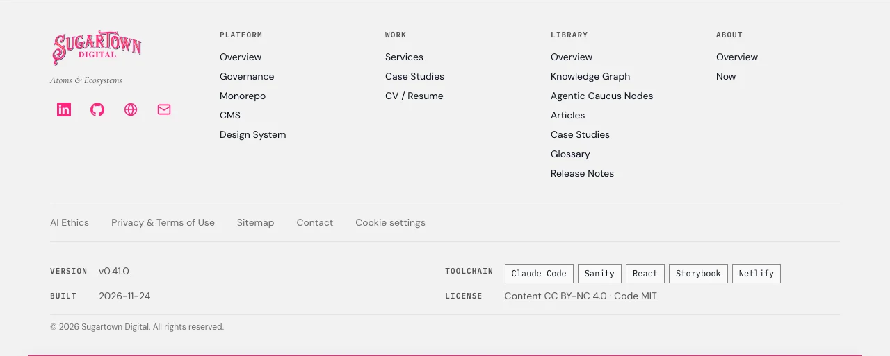
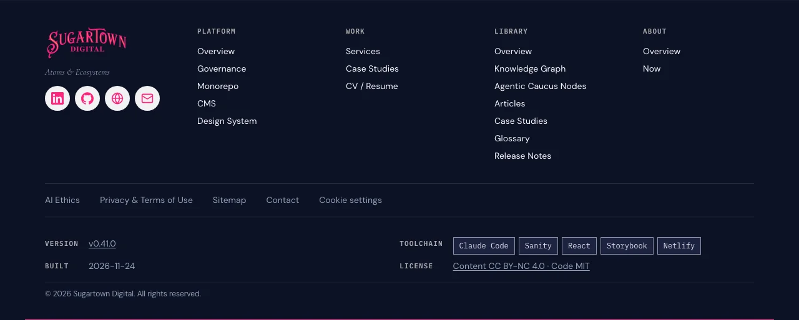

SUG-177 · Ledger line hierarchy (Phase 2)
Issue #56. Phase 0 visual spec for the Phase 2 ledger-line audit. It proposes three line tiers, assigns every surface the user named to one, and shows the site footer before and after. Class names are the production names. Values are tokens unless marked.
apps/web/src/, packages/design-system/ or tokens/ changes until the Phase 0 boxes are ticked. Open decisions are in section 9. The inventory behind this is in the epic doc, ## Phase 2 inventory; 100 of 115 declarations still need a per-file read and are assigned a tier at implementation, not here.1. Interactive prototype
Proposed tiers, drawn with prototype-local tokens (--proto-rule-*) so Before and After use the same markup. Use the toggle to compare themes. No interaction trigger fires, so there is no script beyond the theme toggle.
List (register) and archive lists.Site footer (canvas background)
DescriptionList, ledger (two columns): one rule set, both modes
- Type
- Glossary term
- Category
- Design system
- Used in
- 3 articles
- Updated
- 25 Nov 2026
List (archive register): Tier 1 solid brackets, Tier 2 dotted row rules
- Row one
- Row two
- Row three
2. Before and after
Before is the live footer, captured with Playwright against the local dev server on 2026-11-25 at 1280px wide. The footer rules are --st-color-border-default (#E4E4E5 on #F2F2F3 in light).


The footer drawn in section 1 (use the toggle for both themes). Footer zone dividers move from border-default to Tier 1, and the link and meta separators to Tier 2. Layout, spacing and content do not change.
3. Behaviour annotations
Not applicable: the footer is not a nav rail, sidebar, tab bar or anchor surface that scrolls or collapses; its links keep their current behaviour. Rows below are filled for completeness.
| Item | Spec |
|---|---|
| Active state | Unchanged. Lines carry no state. |
| Hash/anchor behaviour | Not applicable: rules are not links. |
| Scroll-spy | Not applicable |
| Sticky/fixed | Not applicable |
| Mobile collapse | Unchanged. DescriptionList ledger keeps its below-768px stacked dividers, now at Tier 2. |
| Click side-effects | None |
4. Contrast, measured
Rules are decorative separators, so WCAG 1.4.11 (3:1 non-text) does not bind them; the figures below are for comparing tiers, not pass or fail. Measured 2026-11-25. Light canvas is #F2F2F3 (--st-color-bg-canvas); dark footer is rgb(13, 18, 38), with translucent rules composited over it.
| Rule | Light ratio | Dark ratio | Verdict |
|---|---|---|---|
Footer today: --st-color-border-default | 1.14 | 1.39 | Too pale: the stated problem |
--st-color-border-subtle | 1.00 | 1.15 | Invisible on canvas in light. Fine inside white surfaces |
--st-color-rule-accent (proposed Tier 2) | 1.52 | 1.54 | Even across themes |
--st-color-border-medium (dark Tier 1) | 1.52 | 1.84 | Candidate dark value for Tier 1 |
--st-color-neutral-400 = --st-dl-ledger-border (light Tier 1) | 2.25 | 7.36 | Light is right; dark is far too bright because the ledger token has no dark value |
--st-color-border-wrap | 2.25 | 1.39 | Light matches ledger; dark was deliberately set to border-default |
Command: a short Python script computing WCAG relative luminance from the resolved values in packages/design-system/src/styles/theme.pink-moon.css and tokens.css, translucent colours composited over rgb(13, 18, 38). The text-pair sidecar (validate:vspec-contrast) is not used because there is no text pair. pnpm validate:contrast runs at implementation.
5. Class naming table
No new class. Tier changes are token changes inside existing rules.
| Class | Closest existing pattern | Decision |
|---|---|---|
.footer, .top and the three other footer rules | same | Keep the class; change the token |
.oneCol .item, .twoCol.ledger .item in DescriptionList.module.css | same | Keep; both read the Tier 2 row token, ledger outer edge reads Tier 1 |
6. Component choice audit
No new component and no new DS primitive. The change edits the token a rule reads in Footer, DescriptionList, List, Sitemap, Series and the taxonomy archive rows. It adds no List props: the list-markup migrations stay in Phase 1.
7. Token list
| Role | Tokens |
|---|---|
| Tier 1 · Section rule (new semantic token) | --st-color-rule-section: light --st-color-neutral-400, dark --st-color-border-medium. Replaces --st-dl-ledger-border and the section uses of --st-color-border-wrap (both stay as aliases until consumers move) |
| Tier 2 · Row rule | --st-color-rule-accent (exists, no change). Solid form: border-bottom: 1px solid. Dotted form: the existing List.module.css .row::after gradient, with its --list-dot-size (2px) and --list-dot-gap (6px) tunables, colour changed from --st-color-border-medium to this token |
| Tier 3 · Hairline | --st-color-border-subtle (exists, no change) |
| Component borders (inputs, cards, chips) | --st-color-border-default, --st-color-border-medium, --st-color-border-strong (no change) |
| Prototype only | --proto-rule-section, --proto-rule-row, --proto-rule-hair map to the three tokens above |
One new token (--st-color-rule-section) replaces two (--st-dl-ledger-border, --st-color-border-wrap for section use). That is a consolidation, and no value is raised to fit a surface. Unused token --st-color-footer-divider (pink 25%) is only read by Card.module.css; see decision 3.
8. Governance checks
| Check | Applies | Evidence |
|---|---|---|
| Phase 0 trigger (unreviewed visual format) | Yes | Footer and ledger lines render differently after the change |
| Nav annotations (six) | No | Section 3 |
| Interactive prototype | No trigger fires | Section 1 (theme toggle only) |
| CSS class reuse audit | No new class | Section 5 |
| Component choice audit | No new component | Section 6 |
| Content Write Gate | No | No Sanity writes |
| Rule-file write gate | No | No rule file edited. Token edits go through tokens/source/tokens.json then pnpm tokens:build |
| Diagram red-pen gate | No | No diagram |
9. Decisions answered
- Answered: Footer top edge and the rule under the nav columns use Tier 1 (light 2.25:1, dark 1.84:1); the rules under the legal links and above the copyright use Tier 2 (light 1.52:1, dark 1.54:1). (2026-11-25)
- OPEN: Add
--st-color-rule-sectionand alias the two old tokens (recommended), or retune--st-color-border-wrapin dark and rename later. Cost of the alias route: one more token until the consumers move. - Withdrawn (2026-11-25):
--st-color-footer-dividerstays.Card.module.cssreads it for the Card footer's dashed rule, so it is not a site-footer token. - OPEN:
DescriptionListone-column default moves fromborder-defaultto Tier 2, so default and ledger differ only in layout, not line colour (recommended). - OPEN (added at your request): Dotted is a second axis (form), not a fourth tier. Tier 2 has a solid form and a dotted form, same colour. Dotted is for row rules in list-style surfaces (
Listregister, archive lists); solid stays for ledger cells, column rules, and anything not a list row. Recommended. Cost: dark dotted rules move from white 20% to white 15% (1.84 to 1.54:1), light is unchanged (#C6C6C8). Alternative: dotted becomes Tier 2 everywhere a row rule exists, including Sitemap and Series, which changes more pages.
10. Change-specific sections
Tier assignment of the named surfaces
| Surface | Today | After |
|---|---|---|
| Footer top and zone rules (4) | border-default | Tier 1: .footer top edge (line 4) and .top bottom (17). Tier 2: .utility bottom (104) and .copyright top (196). Answered 2026-11-25 |
DescriptionList default | border-default | Tier 2 |
DescriptionList ledger | dl-ledger-border | Tier 1 outer edge, Tier 2 rows and column rule |
List register | border-medium brackets and dotted rows | Tier 1 brackets (solid), Tier 2 dotted rows (dotted form, unchanged geometry) |
| Sitemap rows | border-default | Tier 2 |
| Series parts | border-subtle | Tier 2 |
| Taxonomy archive rows | border-subtle | Tier 2 (to confirm against the live /tags row layout at implementation) |
| Metadata card | rule-accent | Tier 2 (no change) |
11. Phase 0 checklist
- [x] vspec reviewed
- [x] class table approved
- [x] component choice audit approved
- [x] open decisions answered (approved as drawn, 2026-11-25: each open decision takes its recommended answer)